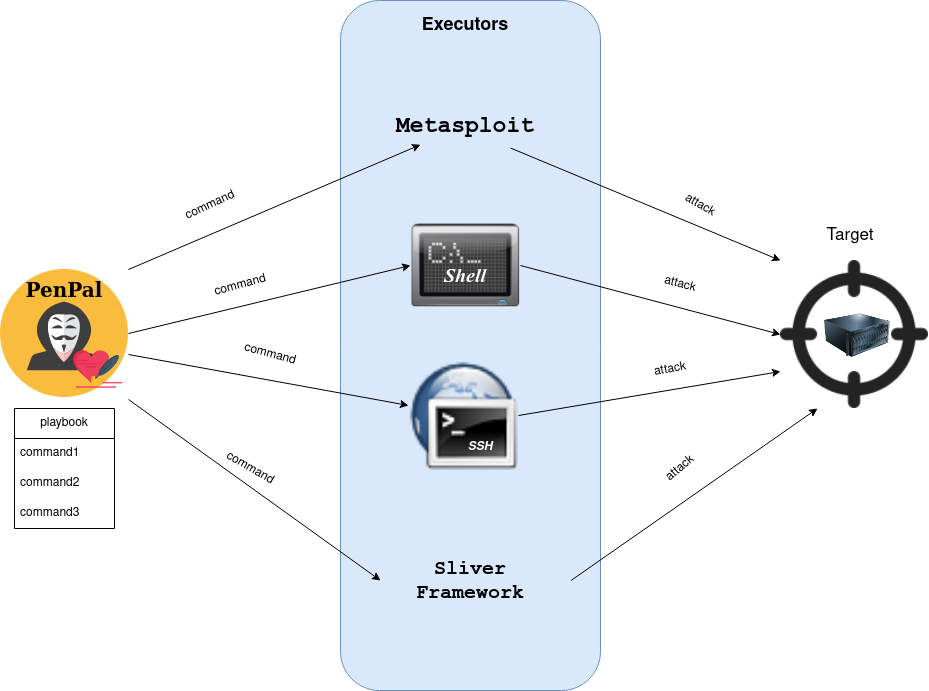

PenPal
PenPal is an attack orchestration tool that executes full attack-chains based on playbooks.

Requirements
PenPal can use Metasploit-Module. For this feature it is required to start the Metasploit-RPC-Daemon:
msfrpcd -P securepassword
Installation
Manually:
$ git clone https://github.com/ait-aecid/penpal.git
$ cd penpal
$ pip3 install -e .
Using pip:
$ pip3 install penpal
Execute
$ penpal --config playbook.yml
Documentation
Please take a look at our documentation for how to install and use penpal:
Security
If you discover any security-related issues read the SECURITY.md first and report the issues.